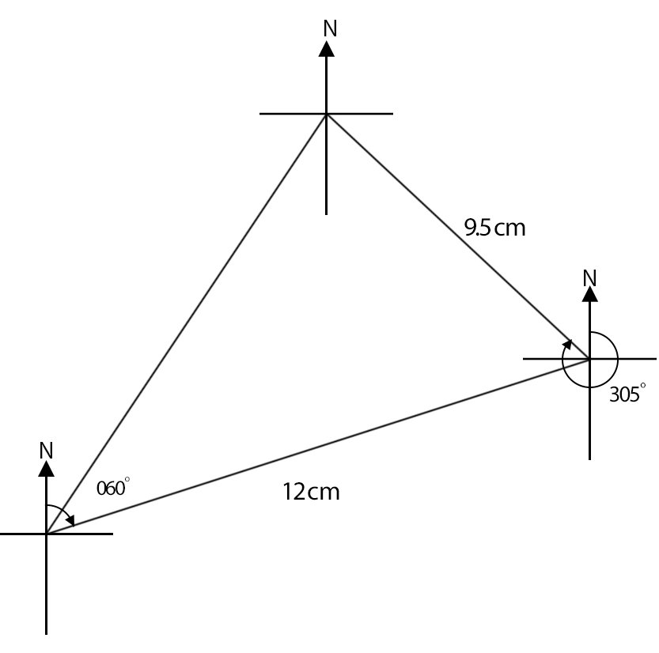
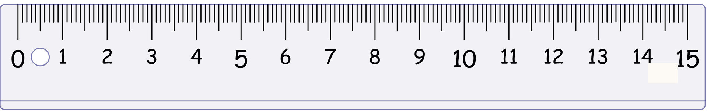
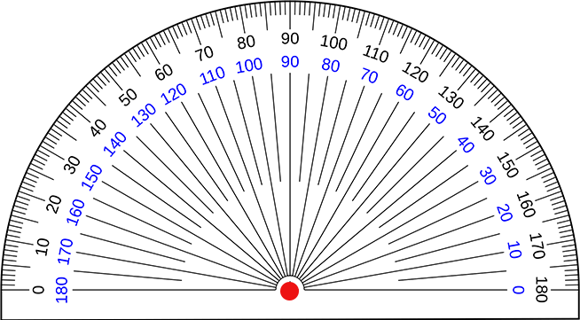

TOPIC 7: BEARINGS
7.5 Choosing and using an appropriate scale to make an accurate drawing. Instructions
Distance Conversion
So, 1cm = 10km
Then: 120km = 120/10 = 12cm
Also: 95km = 95/10 = 9.5cm
a) How far is the aircraft from the starting point?
b) What is the bearing of the air craft from the starting point?
Reset
Turn Ruler
Turn Protractor
Check

 